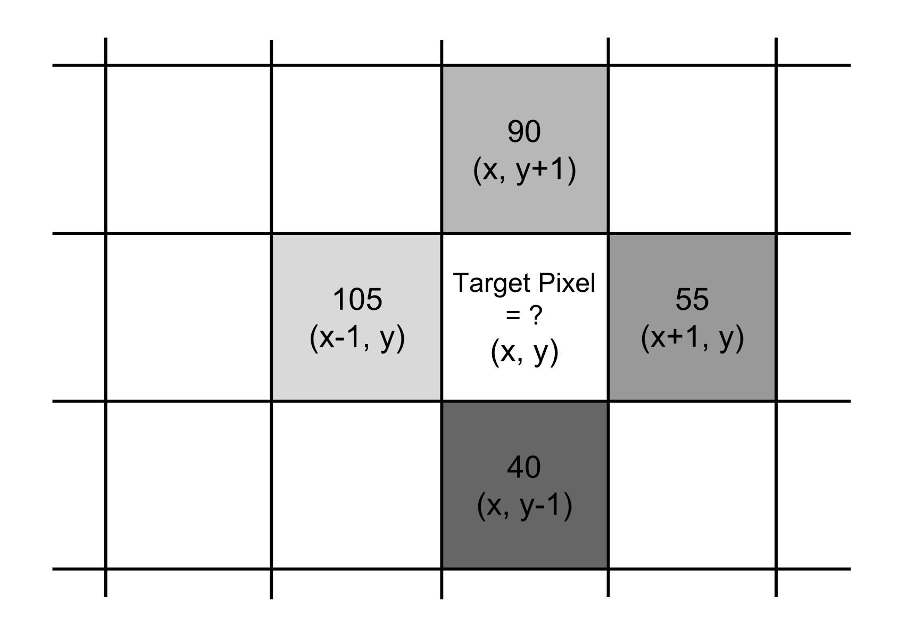
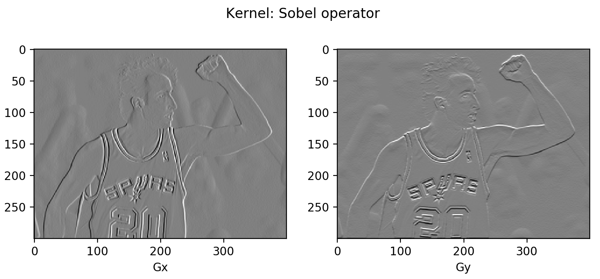
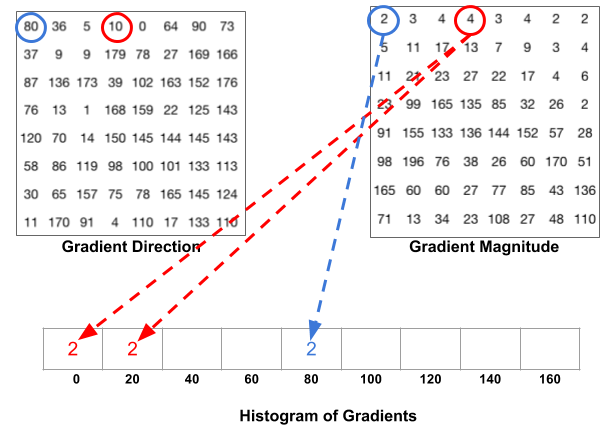
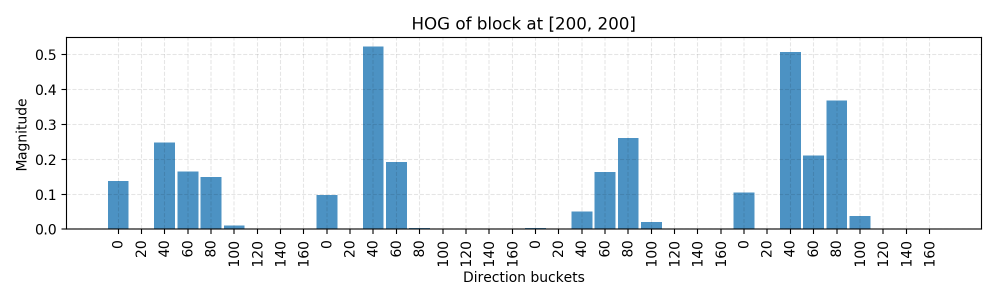

目录
- Image Gradient Vector Common Image Processing Kernels Example: Manu in 2004
- Histogram of Oriented Gradients (HOG) How HOG works Example: Manu in 2004
- Image Segmentation (Felzenszwalb’s Algorithm) Graph Construction Key Concepts How Image Segmentation Works Example: Manu in 2013
- Selective Search How Selective Search Works Configuration Variations
- References
我从未在计算机视觉领域工作过，完全不知道一辆自动驾驶汽车是如何区分红灯停车标志和戴着红色帽子的行人的。为了激励自己去研究物体识别与检测算法背后的数学原理，我决定写一个系列文章，名为“Object Detection for Dummies”。本篇是第一部分，从图像处理中最基础的概念讲起，并介绍几种图像分割方法。目前还不会涉及深度神经网络，基于深度学习的目标检测和识别模型将在和中讨论。傻瓜式目标检测系列之二：CNN、DPM 与 Overfeat傻瓜式目标检测系列第 3 篇：R-CNN 家族
免责声明：在开始写作时，我曾把“object recognition”和“object detection”当作同义词使用。但我认为它们并不完全相同：前者主要是判断图像中是否存在某个物体，而后者还需要指出该物体的位置。尽管如此，二者密切相关，许多物体识别算法为检测任务奠定了基础。
本系列所有文章的链接： [] [] [] []。傻瓜式目标检测教程 第一部分：梯度向量、HOG 与 Selective Search傻瓜式目标检测系列之二：CNN、DPM 与 Overfeat傻瓜式目标检测系列第 3 篇：R-CNN 家族目标检测第 4 部分：快速检测模型
图像梯度向量
首先，我想确保我们能区分以下几个术语。它们非常相似、紧密相关，但并不完全相同。
| Derivative | Directional Derivative | Gradient | |
|---|---|---|---|
| Value type | Scalar | Scalar | Vector |
| Definition | The rate of change of a function f(x,y,z,…) at a point (x_0,y_0,z_0,…), which is the slope of the tangent line at the point. | The instantaneous rate of change of f(x,y,z, …) in the direction of an unit vector \vec{u}. | It points in the direction of the greatest rate of increase of the function, containing all the partial derivative information of a multivariable function. |
在图像处理中，我们希望知道颜色从一个极端变化到另一个极端的方向（例如灰度图中从黑到白）。因此，我们需要度量像素颜色的“梯度”。图像上的梯度是离散的，因为每个像素都是独立的，无法进一步细分。
图像梯度向量为每个像素定义了一个度量，包含该像素在 x 轴和 y 轴两个方向上的颜色变化。其定义与连续多元函数的梯度一致，后者是由所有变量偏导数组成的向量。假设 f(x, y) 表示位置 (x, y) 处像素的颜色值，则像素 (x, y) 的梯度向量定义如下：
其中 \frac{\partial f}{\partial x} 项是 x 方向的偏导数，通过目标像素左右相邻像素的颜色差 f(x+1, y) - f(x-1, y) 计算得到。类似地，\frac{\partial f}{\partial y} 项是 y 方向的偏导数，通过目标像素上下相邻像素的颜色差 f(x, y+1) - f(x, y-1) 计算得到。
图像梯度有两个重要属性：
- 幅值是向量的 L2 范数，即 g = \sqrt{ g_x^2 + g_y^2 }。
- 方向是两个方向偏导数比值的反正切，即 \theta = \arctan{(g_y / g_x)}。

图 1 示例的梯度向量为：
因此，
- the magnitude is \sqrt{50^2 + (-50)^2} = 70.7107, and
- the direction is \arctan{(-50/50)} = -45^{\circ}.
对每个像素逐一重复计算梯度的过程效率很低。更好的做法是将这一过程转化为对整张图像矩阵应用卷积运算，记为 \mathbf{A}，使用专门设计的卷积核来完成。
我们先来看图 1 示例的 x 方向，使用卷积核 [-1,0,1] 沿 x 轴滑动；\ast 表示卷积运算：
类似地，在 y 方向我们采用卷积核 [+1, 0, -1]^\top：
可以在 Python 中尝试以下代码：
import numpy as np
import scipy.signal as sig
data = np.array([[0, 105, 0], [40, 255, 90], [0, 55, 0]])
G_x = sig.convolve2d(data, np.array([[-1, 0, 1]]), mode='valid')
G_y = sig.convolve2d(data, np.array([[-1], [0], [1]]), mode='valid')
上述两个函数分别返回 array([[0], [-50], [0]]) 和 array([[0, 50, 0]])。（注意在 numpy 数组表示中，40 出现在 90 之前，因此卷积核中 -1 也相应地排在 1 之前。）
常用图像处理卷积核
Prewitt 算子：不再仅依赖四个直接相邻像素，而是利用周围八个像素以获得更平滑的结果。
Sobel 算子：为了更强调直接相邻像素的影响，赋予它们更高的权重。
人们针对不同目标设计了不同的卷积核，例如边缘检测、模糊、锐化等。更多示例和参考可查阅这个维基页面。
示例：2004 年的 Manu
让我们对 2004 年 Manu Ginobili 头发还很浓密时的照片[[下载图像]({{ ‘/assets/data/manu-2004.jpg’ | relative_url }}){:target="_blank"}]进行一个简单实验。为简化起见，我们首先将照片转换为灰度图。对于彩色图像，只需在每个颜色通道分别重复相同的过程即可。
import numpy as np
import scipy
import scipy.signal as sig
# With mode="L", we force the image to be parsed in the grayscale, so it is
# actually unnecessary to convert the photo color beforehand.
img = scipy.misc.imread("manu-2004.jpg", mode="L")
# Define the Sobel operator kernels.
kernel_x = np.array([[-1, 0, 1],[-2, 0, 2],[-1, 0, 1]])
kernel_y = np.array([[1, 2, 1], [0, 0, 0], [-1, -2, -1]])
G_x = sig.convolve2d(img, kernel_x, mode='same')
G_y = sig.convolve2d(img, kernel_y, mode='same')
# Plot them!
fig = plt.figure()
ax1 = fig.add_subplot(121)
ax2 = fig.add_subplot(122)
# Actually plt.imshow() can handle the value scale well even if I don't do
# the transformation (G_x + 255) / 2.
ax1.imshow((G_x + 255) / 2, cmap='gray'); ax1.set_xlabel("Gx")
ax2.imshow((G_y + 255) / 2, cmap='gray'); ax2.set_xlabel("Gy")
plt.show()

你可能会注意到大部分区域呈灰色。因为两个像素之间的差异范围在 -255 到 255 之间，我们需要将其转换回 [0, 255] 才能正常显示。 一个简单的线性变换 (\mathbf{G} + 255)/2 会将所有零值（即颜色恒定的背景，梯度无变化）映射为 125（显示为灰色）。
方向梯度直方图（HOG）
方向梯度直方图（Histogram of Oriented Gradients，简称 HOG）是一种从像素颜色中高效提取特征的方法，可用于构建物体识别分类器。理解了图像梯度向量的概念后，HOG 的工作原理就不难理解了。让我们开始吧！
HOG 的工作原理
- Preprocess the image, including resizing and color normalization.
- Compute the gradient vector of every pixel, as well as its magnitude and direction.
- Divide the image into many 8x8 pixel cells. In each cell, the magnitude values of these 64 cells are binned and cumulatively added into 9 buckets of unsigned direction (no sign, so 0-180 degree rather than 0-360 degree; this is a practical choice based on empirical experiments). For better robustness, if the direction of the gradient vector of a pixel lays between two buckets, its magnitude does not all go into the closer one but proportionally split between two. For example, if a pixel’s gradient vector has magnitude 8 and degree 15, it is between two buckets for degree 0 and 20 and we would assign 2 to bucket 0 and 6 to bucket 20. This interesting configuration makes the histogram much more stable when small distortion is applied to the image.

- Then we slide a 2x2 cells (thus 16x16 pixels) block across the image. In each block region, 4 histograms of 4 cells are concatenated into one-dimensional vector of 36 values and then normalized to have an unit weight. The final HOG feature vector is the concatenation of all the block vectors. It can be fed into a classifier like SVM for learning object recognition tasks.
示例：2004 年的 Manu
让我们复用上一节的同一张示例图像。还记得我们已经计算了整张图像的 \mathbf{G}_x 和 \mathbf{G}_y。
N_BUCKETS = 9
CELL_SIZE = 8 # Each cell is 8x8 pixels
BLOCK_SIZE = 2 # Each block is 2x2 cells
def assign_bucket_vals(m, d, bucket_vals):
left_bin = int(d / 20.)
# Handle the case when the direction is between [160, 180)
right_bin = (int(d / 20.) + 1) % N_BUCKETS
assert 0 <= left_bin < right_bin < N_BUCKETS
left_val= m * (right_bin * 20 - d) / 20
right_val = m * (d - left_bin * 20) / 20
bucket_vals[left_bin] += left_val
bucket_vals[right_bin] += right_val
def get_magnitude_hist_cell(loc_x, loc_y):
# (loc_x, loc_y) defines the top left corner of the target cell.
cell_x = G_x[loc_x:loc_x + CELL_SIZE, loc_y:loc_y + CELL_SIZE]
cell_y = G_y[loc_x:loc_x + CELL_SIZE, loc_y:loc_y + CELL_SIZE]
magnitudes = np.sqrt(cell_x * cell_x + cell_y * cell_y)
directions = np.abs(np.arctan(cell_y / cell_x) * 180 / np.pi)
buckets = np.linspace(0, 180, N_BUCKETS + 1)
bucket_vals = np.zeros(N_BUCKETS)
map(
lambda (m, d): assign_bucket_vals(m, d, bucket_vals),
zip(magnitudes.flatten(), directions.flatten())
)
return bucket_vals
def get_magnitude_hist_block(loc_x, loc_y):
# (loc_x, loc_y) defines the top left corner of the target block.
return reduce(
lambda arr1, arr2: np.concatenate((arr1, arr2)),
[get_magnitude_hist_cell(x, y) for x, y in zip(
[loc_x, loc_x + CELL_SIZE, loc_x, loc_x + CELL_SIZE],
[loc_y, loc_y, loc_y + CELL_SIZE, loc_y + CELL_SIZE],
)]
)
下面的代码简单地调用函数来构建直方图并进行绘制。
# Random location [200, 200] as an example.
loc_x = loc_y = 200
ydata = get_magnitude_hist_block(loc_x, loc_y)
ydata = ydata / np.linalg.norm(ydata)
xdata = range(len(ydata))
bucket_names = np.tile(np.arange(N_BUCKETS), BLOCK_SIZE * BLOCK_SIZE)
assert len(ydata) == N_BUCKETS * (BLOCK_SIZE * BLOCK_SIZE)
assert len(bucket_names) == len(ydata)
plt.figure(figsize=(10, 3))
plt.bar(xdata, ydata, align='center', alpha=0.8, width=0.9)
plt.xticks(xdata, bucket_names * 20, rotation=90)
plt.xlabel('Direction buckets')
plt.ylabel('Magnitude')
plt.grid(ls='--', color='k', alpha=0.1)
plt.title("HOG of block at [%d, %d]" % (loc_x, loc_y))
plt.tight_layout()
在上面的代码中，我以左上角位于 [200, 200] 的块为例，下面是该块归一化后的最终直方图。你可以修改代码来改变滑动窗口所定位的块位置。

上述代码主要用于演示计算过程。实际上有许多现成的库已经实现了 HOG 算法，例如 OpenCV、SimpleCV 和 scikit-image。
图像分割（Felzenszwalb 算法）
当一张图像中存在多个物体时（几乎所有真实世界的照片都是如此），我们需要识别出可能包含目标物体的区域，以便更高效地进行分类。
Felzenszwalb 和 Huttenlocher（2004）提出了一种基于图的算法，用于将图像分割成相似区域。它也是我们接下来要讨论的 Selective Search（一种流行的区域提议算法）的初始化方法。
假设我们使用一个无向图 G=(V, E) 来表示输入图像。每个顶点 v_i \in V 代表一个像素。一条边 e = (v_i, v_j) \in E 连接两个顶点 v_i 和 v_j，其关联权重 w(v_i, v_j) 衡量 v_i 和 v_j 之间的差异程度。这种差异可以在颜色、位置、亮度等维度上量化。权重越高，两个像素就越不相似。一个分割方案 S 是将 V 分割成多个连通分量 \{C\}。直观上，相似的像素应属于同一分量，而不相似的像素则被分配到不同的分量。
图的构建
将图像构建为图有两种常用方法。
- 网格图：每个像素仅与其周围邻居相连（共 8 个其他像素）。边的权重为两个像素亮度值的绝对差。
- 最近邻图：将每个像素视为特征空间（x, y, r, g, b）中的一个点，其中 (x, y) 是像素位置，(r, g, b) 是 RGB 颜色值。权重为两个像素特征向量之间的欧氏距离。
关键概念
在给出好的图划分（即图像分割）的判断标准之前，我们先定义几个关键概念：
- 内部差异：Int(C) = \max_{e\in MST(C, E)} w(e)，其中 MST 是该分量的最小生成树。即使移除所有权重小于 Int(C) 的边，分量 C 仍然可以保持连通。
- 两个分量之间的差异：Dif(C_1, C_2) = \min_{v_i \in C_1, v_j \in C_2, (v_i, v_j) \in E} w(v_i, v_j)。如果两者之间没有边，则 Dif(C_1, C_2) = \infty。
- 最小内部差异：MInt(C_1, C_2) = min(Int(C_1) + \tau(C_1), Int(C_2) + \tau(C_2))，其中 \tau(C) = k / \vert C \vert 用于确保分量间差异有一个有意义的阈值。k 越大，越容易产生较大的分量。
分割的质量通过针对两个给定区域 C_1 和 C_2 定义的成对区域比较谓词来评估：
只有当该谓词为 True 时，我们才认为它们是两个独立的分量；否则说明分割过于精细，它们可能应该被合并。
图像分割的工作流程
该算法采用自底向上的过程。给定 G=(V, E) 和 |V|=n, |E|=m：
- Edges are sorted by weight in ascending order, labeled as e_1, e_2, \dots, e_m.
- Initially, each pixel stays in its own component, so we start with n components.
- Repeat for k=1, \dots, m: The segmentation snapshot at the step k is denoted as S^k. We take the k-th edge in the order, e_k = (v_i, v_j). If v_i and v_j belong to the same component, do nothing and thus S^k = S^{k-1}. If v_i and v_j belong to two different components C_i^{k-1} and C_j^{k-1} as in the segmentation S^{k-1}, we want to merge them into one if w(v_i, v_j) \leq MInt(C_i^{k-1}, C_j^{k-1}); otherwise do nothing.
如果你对分割性质的证明以及为什么这样的分割总是存在感兴趣，可以参考原论文。

示例：2013 年的 Manu
这次我们使用 2013 年年长的 Manu Ginobili 的照片[[图像]({{ ‘/assets/data/manu-2013.jpg’ | relative_url }})]作为示例，此时他的秃顶已经非常明显。为简化起见，我们依然使用灰度图。
我们不再从零开始编写代码，而是直接使用 skimage.segmentation.felzenszwalb 函数对图像进行处理。
import skimage.segmentation
from matplotlib import pyplot as plt
img2 = scipy.misc.imread("manu-2013.jpg", mode="L")
segment_mask1 = skimage.segmentation.felzenszwalb(img2, scale=100)
segment_mask2 = skimage.segmentation.felzenszwalb(img2, scale=1000)
fig = plt.figure(figsize=(12, 5))
ax1 = fig.add_subplot(121)
ax2 = fig.add_subplot(122)
ax1.imshow(segment_mask1); ax1.set_xlabel("k=100")
ax2.imshow(segment_mask2); ax2.set_xlabel("k=1000")
fig.suptitle("Felsenszwalb's efficient graph based image segmentation")
plt.tight_layout()
plt.show()
代码运行了两个版本的 Felzenszwalb 算法。如图所示，左侧 k=100 生成了更细粒度的分割，包含许多小区域，其中 Manu 的秃顶被清晰识别出来。右侧 k=1000 则生成较粗粒度的分割，区域倾向于更大。
Selective Search
Selective Search 是一种常用的区域提议算法，用于生成可能包含物体的候选区域。它建立在图像分割结果之上，并利用基于区域的特征（注意：不仅仅是单个像素的属性）进行自底向上的层次化分组。
Selective Search 的工作原理
- At the initialization stage, apply Felzenszwalb and Huttenlocher’s graph-based image segmentation algorithm to create regions to start with.
- Use a greedy algorithm to iteratively group regions together: First the similarities between all neighbouring regions are calculated. The two most similar regions are grouped together, and new similarities are calculated between the resulting region and its neighbours.
- The process of grouping the most similar regions (Step 2) is repeated until the whole image becomes a single region.

配置变体
针对两个区域 (r_i, r_j)，Selective Search 提出了四种互补的相似度度量：
- 颜色相似度
- 纹理：使用在材料识别中表现良好的算法，例如 SIFT。
- 尺寸：鼓励小区域尽早合并。
- 形状：理想情况下一个区域能填补另一个区域的空缺。
通过 (i) 调整 Felzenszwalb 和 Huttenlocher 算法中的阈值 k，(ii) 改变颜色空间，以及 (iii) 选择不同的相似度度量组合，我们可以生成多种多样的 Selective Search 策略。产生最佳质量区域提议的版本通常配置为 (i) 混合多种初始分割方案，(ii) 融合多个颜色空间，以及 (iii) 组合所有相似度度量。不出意外，我们需要在质量（模型复杂度）与速度之间做出权衡。
引用格式：
@article{weng2017detection1,
title = "Object Detection for Dummies Part 1: Gradient Vector, HOG, and SS",
author = "Weng, Lilian",
journal = "lilianweng.github.io",
year = "2017",
url = "https://lilianweng.github.io/posts/2017-10-29-object-recognition-part-1/"
}
参考文献
[1] Dalal, Navneet, and Bill Triggs. “Histograms of oriented gradients for human detection.” Computer Vision and Pattern Recognition (CVPR), 2005.
[2] Pedro F. Felzenszwalb, and Daniel P. Huttenlocher. “Efficient graph-based image segmentation.” Intl. journal of computer vision 59.2 (2004): 167-181.
[3] Histogram of Oriented Gradients by Satya Mallick